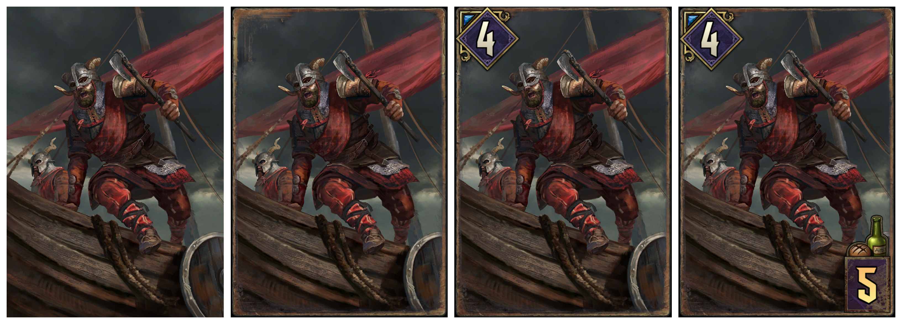
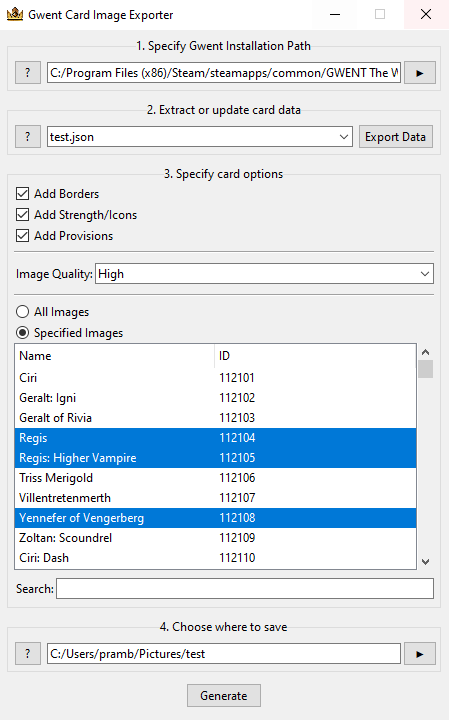

The Gwent Card Exporter is a piece of software made to work alongside Gwent: The Witcher Card Game. It extracts both card images and card data from the Unity game files and then builds images based on that data. I built it because many people wanted to be able to get card images immediatly after a new update for the game was released while not having to wait for third-party data or images. This project was my first venture into more complex Python code, making complete software, and building a GUI. I also learned how to work with Unity assets, format JSON and XML data and work with user feedback to improve UI elements and add features.
Cards can be exported and built using several different options such as image quality and with or without borders. I also added a searchable list that presents all the cards found within the game data so you can generate only a couple cards instead of over 1,000 everytime. The program can also be used simply as a tool to format the game data into a useable JSON file for other related projects.
